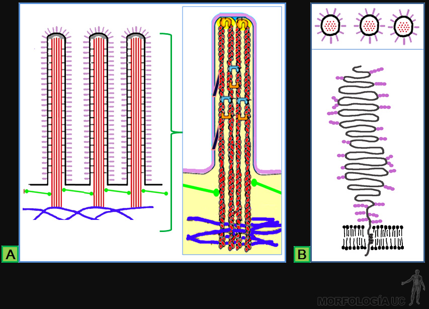
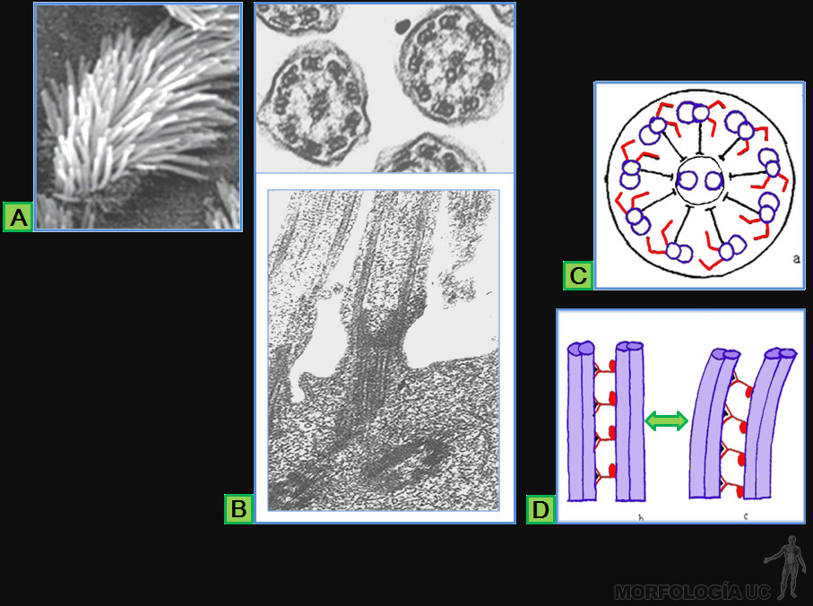
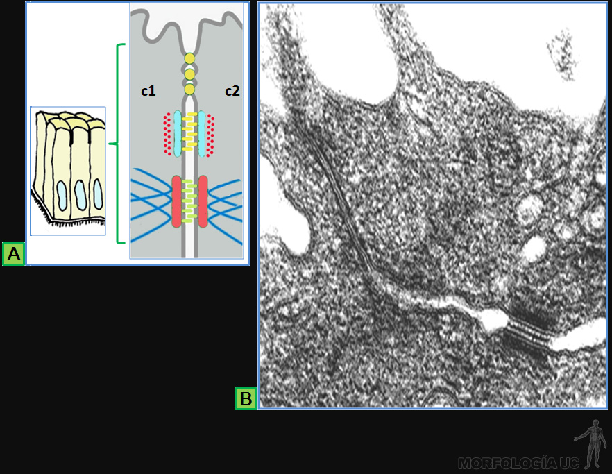
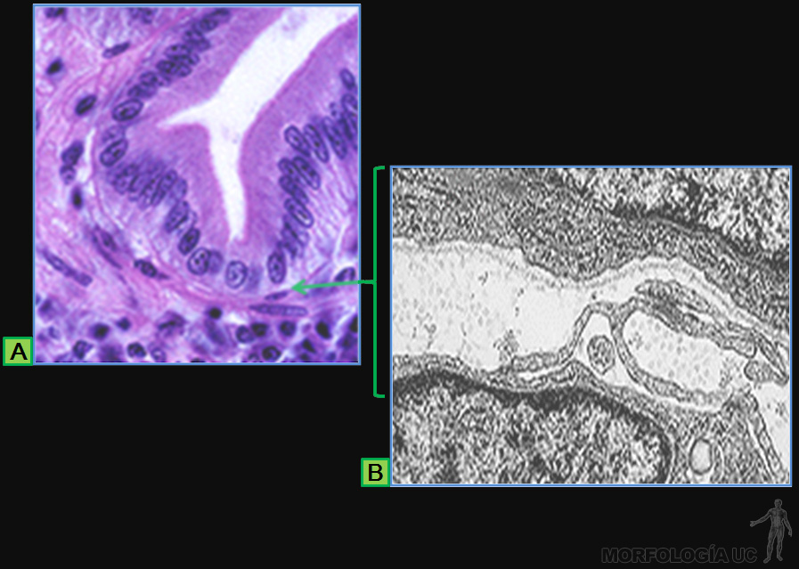
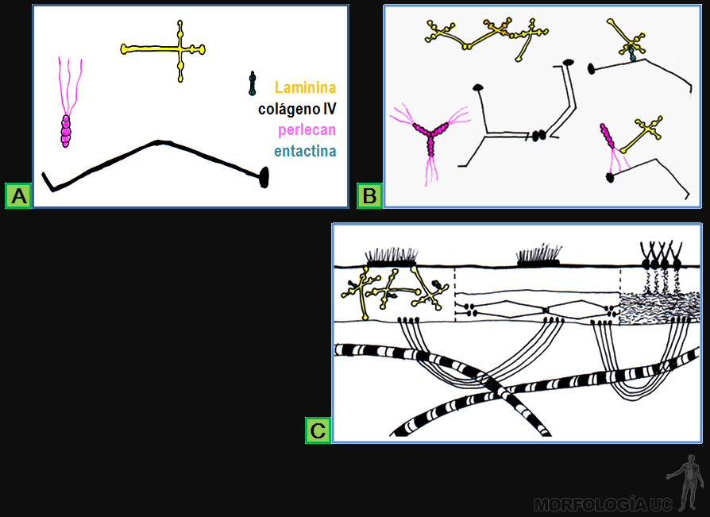

Anatomía Microscópica Epitelios
Epitelios › Conjuntivo › Muscular › Nervioso ›
-
Las imágenes al microscópio de luz y electrónico pertenecen a profesores del curso de Histología para la Escuela de Medicina de la P.U.C.
Los dibujos complementarios a estas imágenes están realizados por los autores de este libro, basándose en parte, en material publicado en los libros "General Histology of Mammals" R.V. Kristic, (1979; "Human Microscopic Anatomy") R.V. Kristic, (991) e "Histología Básica" (6° ed.) J. Carneiro, L.C. Junqueira.Fig. 3-1:
- A) esquema de la estructura de un epitelio monoestratificado sobre el conjuntivo subyacente;
- B) microfotografía electrónica de transmisión (MET) de una lámina epitelial, con un capilar sanguíneo en el conjuntivo subyacente.
-
Fig. 3-2:
- A) esquema de la disposición del citoesqueleto de filamentos intermedios en las células de un epitelio estratificado;
- B) inmunolocalización de queratina en corte por epidermis observado en el microscopio de fluorescencia (MF);
- C) micrografía óptica (MO) de corte por epidermis, teñido con hematoxilina eosina (HE).
-

Fig. 3-3:
- A) esquema de una invaginación en la lámina epitelial que forma dos tubos revestidos por células epiteliales;
- B) se muestra que ellas sintetizan granos de secreción que luego liberarán al lumen tubular.
-
Fig. 3-4:
- A) esquema de la estructura del epitelio estratificado cornificado de la epidermis que forma una barrera impermeable al agua;
- B) se ilustra la secreción de gránulos con glicolípidos apolares (verde) hacia el espacio entre las células cornificadas.
-
Fig. 3-5:
- A) micrografía electrónica de barrido (MEB) de la superficie del epitelio ciliado de la tráquea;
- B) esquema de células ciliadas cuya superficie está cubierta por una capa de mucus;
- C) se ilustra el movimiento de cada cilio, cuya acción conjunta permite desplazar la capa de mucus a lo largo de la superficie epitelial.
-
Fig. 3-6:
- A) MEB de microvellosidades en la superficie apical de células del epitelio de revestimiento intestinal;
- B) MO de corte por este epitelio, en cuyo borde apical destaca la chapa estriada, tinción HE;
- C) MEB del epitelio intestinal en que destacan las caras laterales de las células y el espacio intercelular.
-
Fig. 3-7:
- A) MO del epitelio de revestimiento de vesícula biliar, tinción HE;
- B) dibujo de las características de este epitelio;
- C) esquema que ilustra el arrastre osmótico de agua, al ocurrir el transporte de sodio hacia el espacio intercelular.
-
Fig. 3-8:
- A) MO del epitelio de revestimiento intestinal, en que destacan las células caliciformes de color rojo, tinción de PAS (ácido periódico-reactivo de Schiff);
- B) esquema de la estructura de las células caliciformes.
-
Fig. 3-9: Esquema de los tipos de epitelios monoestratificados.
-
Fig. 3-10: MO de epitelios monoestratificados, tinción HE.
- A) mesotelio del peritoneo;
- B) túbulos distales del riñón;
- C) epitelio de las vellosidades intestinales.
-
Fig. 3-11:
- A) esquema de un epitelio plano pluriestratificado no cornificado;
- B) MO del epitelio del esófago, tinción HE;
- C) esquema de un epitelio plano pluriestratificado cornificado;
- D) MO del epitelio de la piel, tinción HE.
-
Fig. 3-12:
- A) esquema de un epitelio seudoestratificado;
- B) MO del epitelio de la tráquea, tinción HE.
-
Fig. 3-13:
- A) MO del epitelio de la vejiga urinaria, vacía a la izquierda, y parcialmente llena a la derecha, tinción HE;
- B) esquema que muestra la modificación en la forma de las células del epitelio en estos casos.
-
Fig. 3-14:
- A) MO del epitelio de las vellosidades intestinales, tinción de PAS. Destaca la organización polarizada tanto de las células caliciformes como de revestimiento;
- B) MEB en que destacan las superficies luminal lateral de las células epiteliales.
-
Fig. 3-15: Esquema de la estructura de 4 tipos de uniones intercelulares:
- A) bandas de adhesión;
- B) desmosomas;
- C) bandas de oclusión y
- D) uniones de comunicación.
-
Fig. 3-16: Esquema de la organización molecular básica de las uniones de adhesión.
-
Fig. 3-17:
- A) MET de una banda de adhesión; esquema en
- B) de la disposición de filamentos de actina paralelos a la membrana celular en cada célula; y en
- C) de la organización de las moléculas que unen los filamentos a proteínas transmembrana.
-
Fig. 3-18:
- A) MO de los estratos basal y espinoso de epidermis, cada estriación en los límites intercelulares (flech A) corresponde a un desmosoma, tinción HE;
- B) MET de corte a través de un desmosoma;
- C) esquema de las moléculas que unen los filamentos intermedios a las proteínas transmembrana.
-
Fig. 3-19:
- A) MET de una banda de oclusión en corte perpendicular;
- B) esquema de las moléculas transmembrana, que se asocian ocluyendo el espacio intercelular;
- C) MET que muestra la disposición lineal de las moléculas trasmembrana en el interior de la membrana celular, en una preparación por criofractura.
-
Fig. 3-20:
- A) MET, a bajo aumento, de un corte perpendicular por la unión de comunicación, que en
- B) se observa a mayor aumento;
- C) MET que muestra los conexones en el interior de la membrana celular, en una preparación por criofractura;
- D) esquema de la organización molecular de los conexones.
-
Fig. 3-21: Organización polarizada en células epiteliales.
- A) MET del epitelio de un conducto biliar;
- B) reacción histoquímica para Mg-AT. Pasa que, al MO aparece de color café sólo en la superficie lateral del epitelio del tubo, y al MET como grumos negros de fosfato de plomo, en
- C).
-
Fig. 3-22:
- A) esquema de la disposición polarizada de los organelos de una célula caliciforme;
- B) MET que muestra la disposición supranuclear de su aparato de Golgi.
-
Fig. 3-23: MO de epitelios, teñidos con HE.
- A) en el borde luminal del túbulo proximal del riñón, destaca su ribete en cepillo;
- B) epitelio del intestino delgado con la chapa estriada en su borde luminal;
- C) MET de la estructura de las microvellosidades en la chapa estriada.
-

Fig. 3-24:
- A) esquema de la ultraestructura de las microvellosidades;
- B) estructura de una de las moléculas del glicocáliz de microvellosidades intestinales.
-
Fig. 3-25:
- A) MO del epitelio del epidídimo, en cuyo borde luminal destacan los estereocilios, tinción HE;
- B) esquema de la estructura de este epitelio y sus estereocilios.
-

Fig. 3-26:
- A) MEB de cilios proyectados hacia el lumen del oviducto;
- B) MET de cortes transversal y longitudinal por cilios;
- C) esquema de la estructura de cada cilio (microtúbulos: morado, dineínas: rojo);
- D) esquema que ilustra el mecanismo molecular que genera el movimiento ciliar.
-

Fig. 3-27:
- A) esquema de la disposición los tres tipos de unión que forman el complejo de unión entre células epiteliales adyacentes;
- B) MET de un complejo de unión en corte perpendicular.
-

Fig. 3-28:
- A) MO de la unión del epitelio intestinal al conjuntivo subyacente, en que destaca la lámina basal (flecha verde), tinción HE;
- B) MET de la lámina basal junto a la célula epitelial (E), con su capa reticular hacia la célula conjuntiva (C).
-
Fig. 3-29:
- A) MO por un corpúsculo renal, en que el núcleo del epitelio renal está indicado (flecha verde), tinción HE;
- B) MET que muestra la lámina basal de la célula endotelial fusionada con la lámina basal del epitelio renal de la cápsula de Bowman.
-

Fig. 3-30:
- A) estructura de las moléculas presentes en la lámina basal;
- B) polímeros formados por la interacción entre estas moléculas;
- C) esquema de la localización de estos polímeros en la lámina basal y capa reticular.
-
Fig. 3-31:
- A) MET del sitio de adhesión de la célula epitelial a la lámina basal, mediante desmosomas y contactos focales;
- B) estructura molecular de los hemidemosomas;
- C) estructura molecular de los contactos focales.
-
Fig. 3-32:
- A) MEB de la superficie basolateral de las células epiteliales en los túbulos renales;
- B) MET de la interdigitación de los pliegues basales de células vecinas;
- C) esquema del proceso de transporte de iones y agua, hacia los espacios intercelulares entre los pliegues basales.